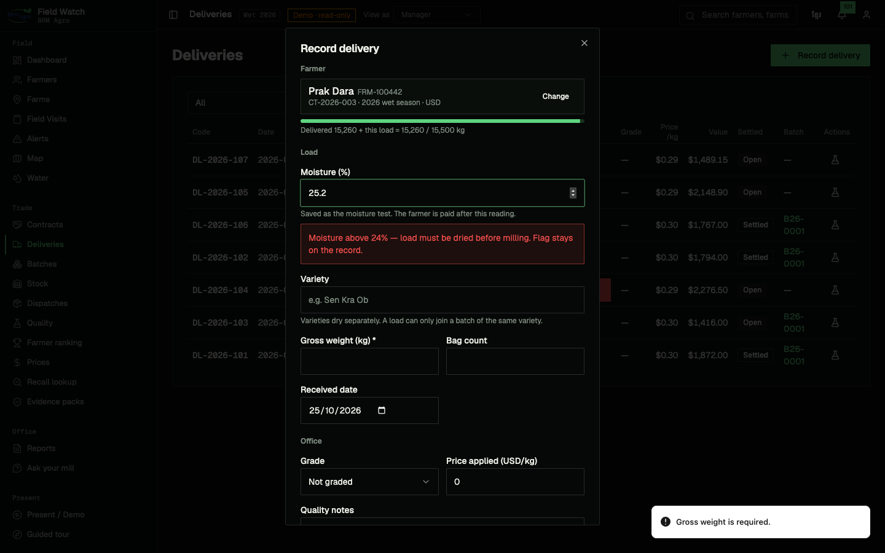
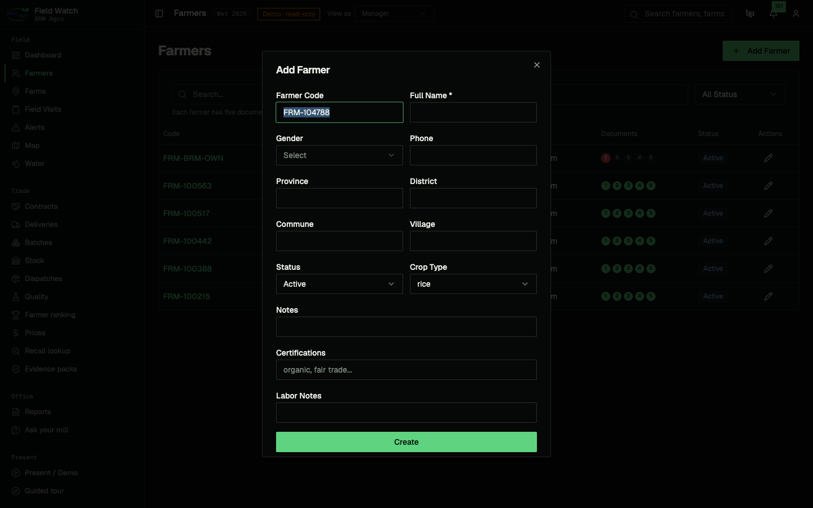
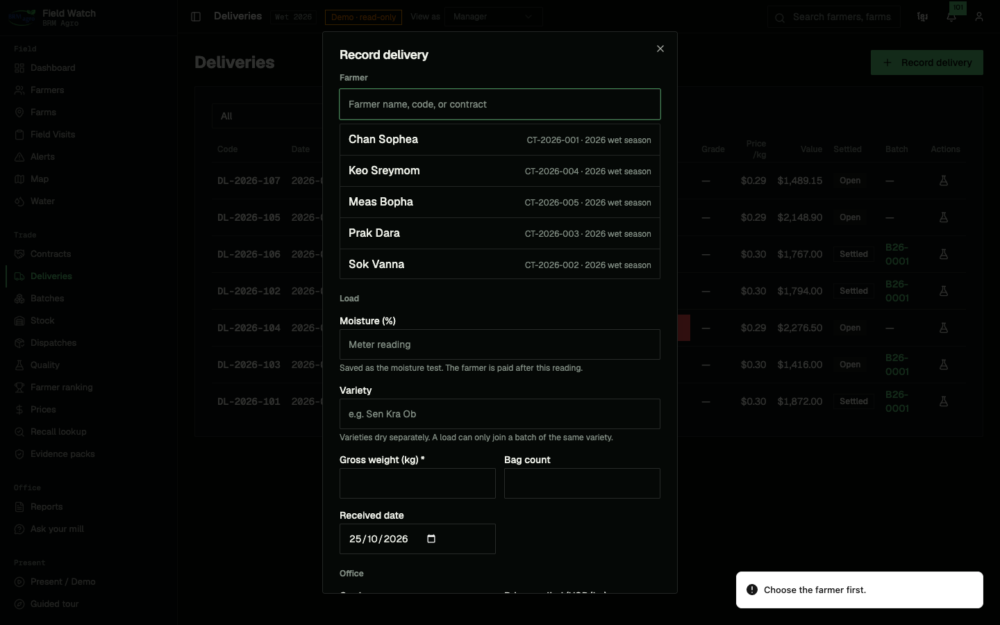
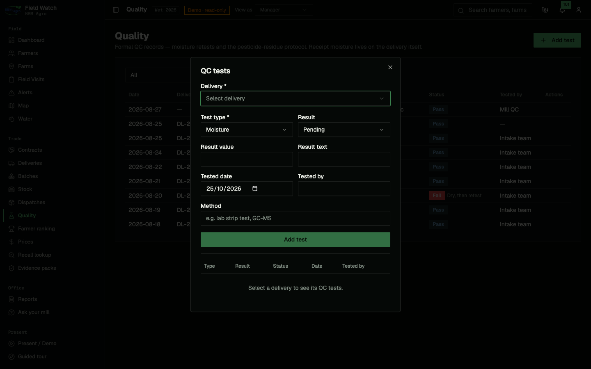
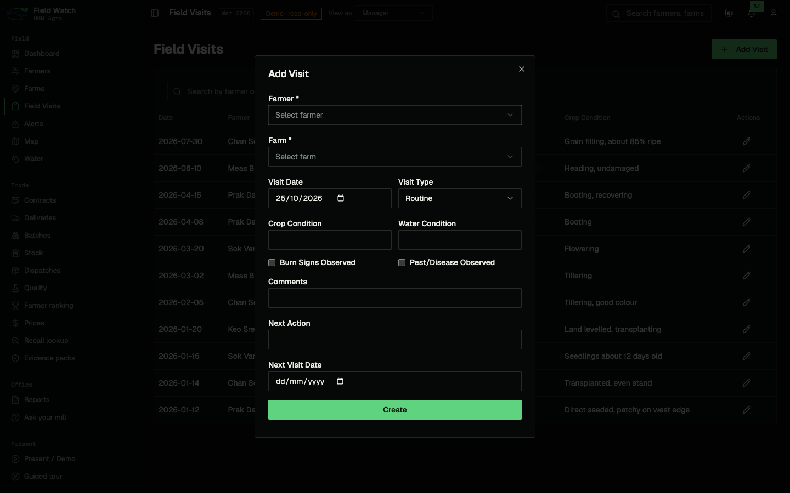
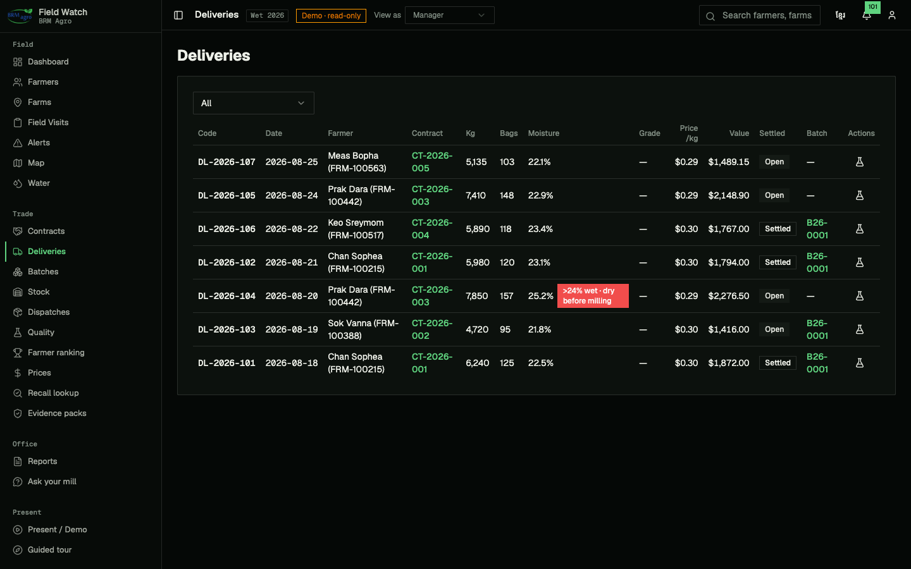
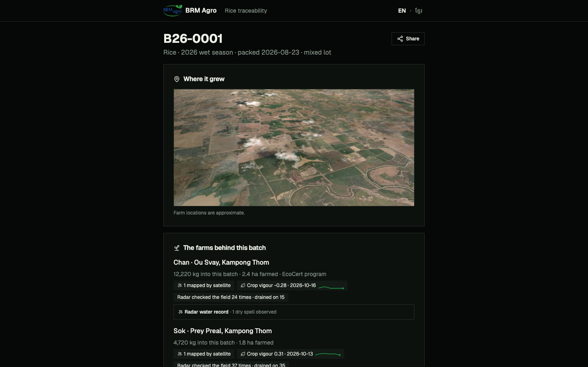

Final year project · Review 2
Field Watch:
data input and testing
What goes into the system, how it is checked on the way in, and the tests that show the program does what the proposal said it would.
Sovandarapor Kong and Yean · fieldwatch.live · github.com/mrjameskongg/field-watch

1. Where the data comes from
Four ways data enters Field Watch.
| Channel | What it brings in | Who or what enters it |
|---|---|---|
| Staff forms | Farmers, farms and GPS, field visits, contracts, input advances, weighbridge deliveries, moisture and QC tests, batches and weigh points, dispatches, settlements, prices | Field officers, warehouse, quality officer, office. 28 entry points in total |
| Satellites | NASA FIRMS fire hotspots, Sentinel-2 crop vigour (NDVI), Sentinel-1 radar water (flooded or drained) | Scheduled scans. No typing |
| Phone outbox | Deliveries and QC tests typed with no signal, sent when the phone reconnects | Weighbridge staff in the field |
| Settings | KHR per USD rate, user roles | Admin only |
Main forms and their input checks
| Form | Fields captured | Checks before saving | Allowed roles |
|---|---|---|---|
| Add farmer | Code (auto), full name, gender, phone, province, district, commune, village, status, crop, certifications | Code and name required | Admin, manager, field officer |
| Farm and parcel | Farm name, farmer, GPS point, area, crop, boundary drawn on the map | Boundary 3 to 200 corners, no self-crossing, overlap with another parcel is flagged | Admin, manager, field officer |
| Field visit | Date, type, crop and water condition, burn signs, pests, next action | Farmer and farm required | Admin, manager, field officer |
| Contract | Season, farmer, hectares, expected yield, currency, price mode, fixed price | Code, season, farmer required. Currency must be USD or KHR (database rule) | Admin, manager |
| Record delivery | Farmer and contract, gross kg, bags, date, moisture %, variety, grade, price | Farmer required, weight above 0, above 24% moisture flagged wet, running total against the contract | Admin, manager, warehouse, field officer |
| QC test | Delivery, test type, result, pass or fail, date, method | Delivery and type required, needs a value, text or result | Admin, manager, warehouse, quality officer |
| Input advance | Item, quantity, unit cost, total, date, deduct at settlement | Total above 0 | Admin, manager |
| Dispatch | Buyer, product, kg, price, date | Buyer required, weight above 0, cannot ship more than is on hand | Admin, manager, warehouse |
| Settlement | Deliveries and advances to pay | Every load needs a moisture test before the farmer is paid | Admin, manager |
Source: code read of the public repo at commit e393643 (25 Oct 2026). Role rules from src/lib/roles-core.ts, lock trigger from the roles_audit migration.
2. The input screens
Screenshots from the live demo, taken 25 Oct 2026. The demo is read-only, so nothing here was saved.




3. Data already in the system
Real records from the mill's ledger and the satellite scans, counted on the live database.
| Satellite readings stored | Rows |
|---|---|
| Sentinel-1 radar water readings (per parcel, per pass) | 752 |
| Sentinel-2 crop vigour readings | 211 |
| Field visits logged | 11 |
| QC tests recorded (8 pass, 1 fail) | 9 |
Deliveries run from 31 Mar to 25 Aug 2026.
Source: SQL count on the live Field Watch database, run 25 Oct 2026. Paddy total = sum of deliveries.gross_weight_kg (5,255,629 kg).
4. Testing
Four levels of testing. Results below were run on 25 Oct 2026 unless marked otherwise.
| Level | What it checks | Result |
|---|---|---|
| Unit tests (Vitest) | Every calculation the app relies on | 477 of 477 passed, 35 files |
| Type check (TypeScript) | The whole codebase compiles with no type errors | Passed |
| Production build | The app builds for deployment | Passed |
| Database permission test (SQL) | Each role can only read and write what it should, demo cannot change anything | 68 of 68 passed (23 Sep 2026) |
| System tests on the live site | Real browser, real site, see next page | 7 of 7 passed |
Unit tests by area
| Area | Examples of what is tested | Tests |
|---|---|---|
| Maps and satellite | Fire hotspot matched to the right farm within 1 km, cloud cover limit 40%, radar flooded or drained, NDVI colours | 140 |
| Data entry rules | Parcel shape valid, parcel overlap, dispatch cannot exceed stock, offline outbox order, search input cleaned, every English label has Khmer | 121 |
| Traceability | Batch genealogy back to each farm, eight-step farmer chain, evidence pack readiness, audit log text | 84 |
| Money and settlement | Settlement maths (loads × price − advances), USD and KHR, moisture above 24% flagged | 63 |
| Quality and grading | Drying loss, milling recovery, export grade limits, stock on hand, farmer ranking A to D | 50 |
| Roles and security | Role matrix, only admin can delete, generated database rules match the code | 19 |
| Total | 477 |
Sources: npx vitest run, tsc --noEmit and npm run build in the public repo at e393643, 25 Oct 2026 (full JSON in fw-tests.json). Permission test supabase/tests/role_policies.sql, last run 23 Sep 2026, not re-run for this review. Settlement figures from docs/DEMO.md.
5. System tests on the live site
Run in a real browser against fieldwatch.live on 25 Oct 2026. Input, what should happen, what did happen.
| # | Input | Expected | Actual | |
|---|---|---|---|---|
| 1 | Open the demo login | Signs in read-only, shows "Demo · read-only" | Signed in, badge shown | Pass |
| 2 | Demo account opens Deliveries | Add, edit and delete buttons hidden | Hidden, table only | Pass |
| 3 | Record delivery, save with no farmer | Refused, asks for the farmer | "Choose the farmer first." | Pass |
| 4 | Farmer chosen, save with no weight | Refused, asks for weight | "Gross weight is required." | Pass |
| 5 | Type moisture 25.2% | Wet-load warning (limit 24%) | Red warning: moisture above 24%, load must be dried before milling | Pass |
| 6 | Choose contract CT-2026-003 | Shows kg delivered against the contract | "Delivered 15,260 + this load = 15,260 / 15,500 kg" | Pass |
| 7 | Open the buyer's QR page for batch B26-0001 with no login | Batch, farms and weights shown. No full names, phones or prices | First name only ("Chan"), no phone, no $ amounts | Pass |


Source: headless browser run (playwright-cli) on fieldwatch.live, 25 Oct 2026. Screenshots in img/.
6. Found in testing, to fix before the final demo
Testing is meant to find problems. These are the ones we found.
| Finding | Why it matters | Plan |
|---|---|---|
| Moisture has no upper limit. 150% would be accepted | A typo could reach a farmer's payment | Limit 0 to 40% in the form and in the database |
| "Test before paying" is checked on screen only | The database itself does not enforce it | Add a database rule |
| Only 7 of 487 deliveries carry a moisture reading | The older ledger import had no moisture column | New loads record it at the weighbridge |
| Weigh points and field events are not in the phone outbox yet | They need signal to save | Route them through the same outbox as deliveries |
| Lint: 1 error, 30 warnings | Code style, not behaviour | Clean up |
Sources: code read of e393643 and eslint run, 25 Oct 2026. Moisture count from the live database, 25 Oct 2026.